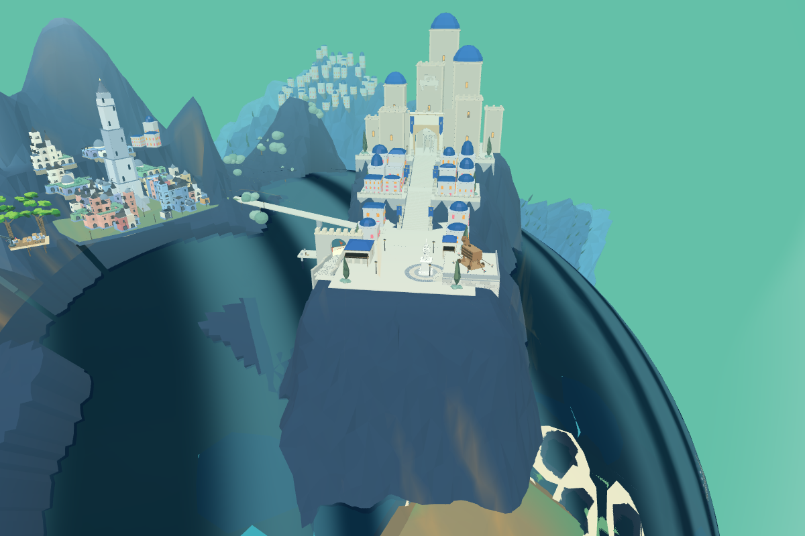
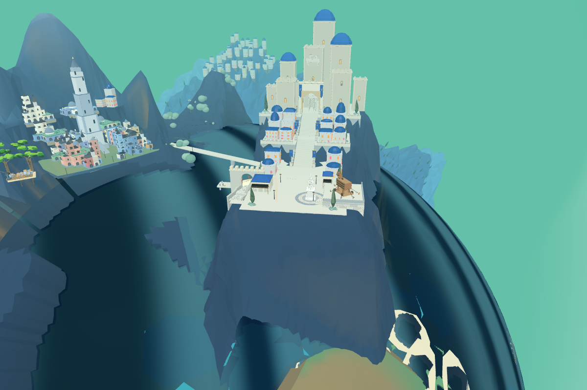
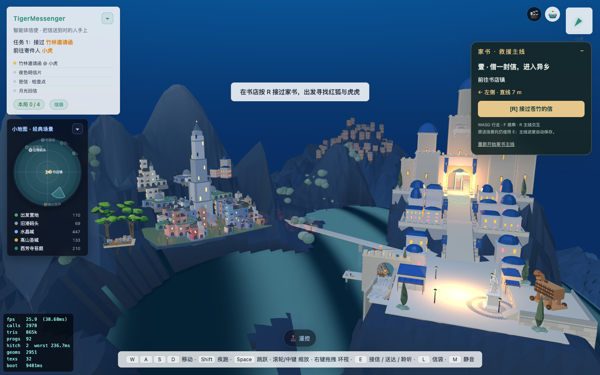
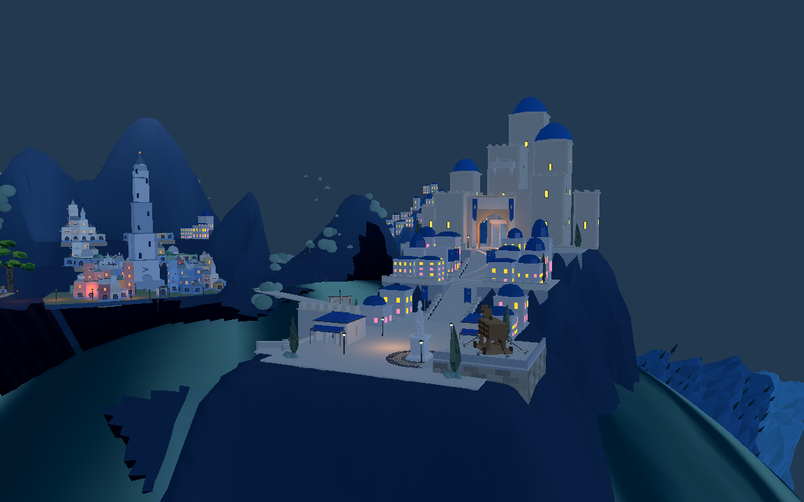

实际 8931 场景同机位对比，冻结动画用于几何诊断；不是目标图最终布光。


仅处理广场前沿之外的山脚；广场、高台及通路保护区顶点保持一致。主山面调整 267 点，前方采样岸线由海面上最高约 9.04 米落到海面下。山体仍过大，底部可见原出生营地相邻地面，区域占地冲突待处理。


Godot 可见网格 27 个岸线采样点匹配 Web，最大量化误差 4.2 毫米。不是完整战役验收。
返回原游戏 · 几何检查 · Godot 检查